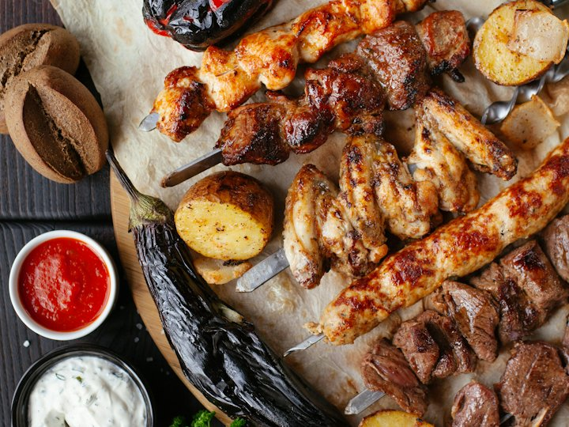
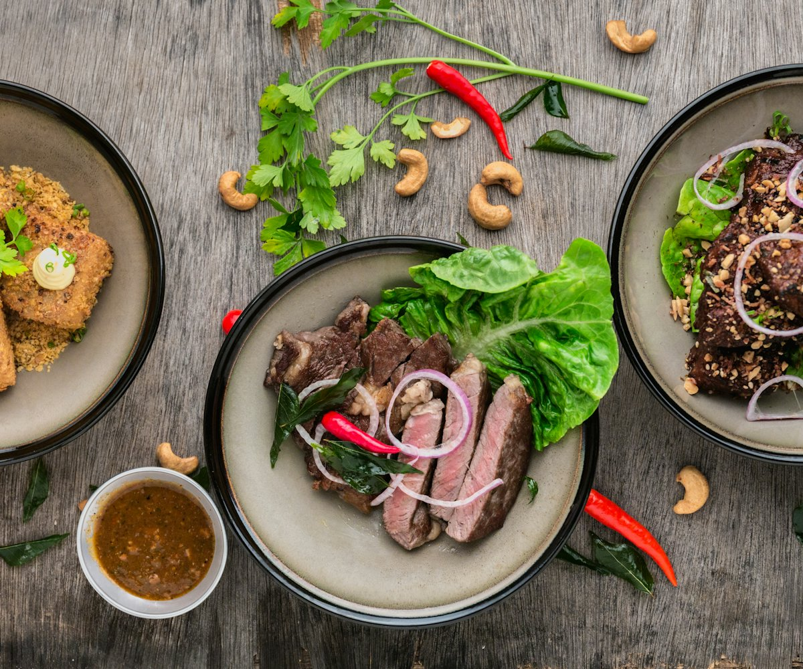
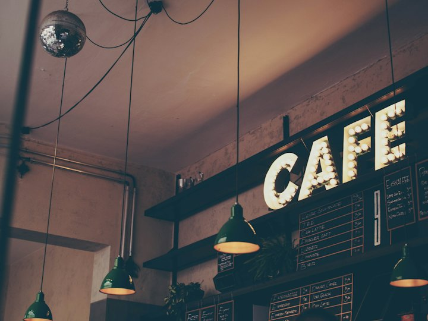

10 satay spots worth the drive to Kajang
From smoky roadside grills to family stalls that have been here for decades.
Hi, I'm Aina. Every week I find the best hawker stalls, cafés and weekend trips, and share them here and on my socials.

Honest reviews, easy directions and exactly what to order.

From smoky roadside grills to family stalls that have been here for decades.
Two days, one small guesthouse and the best breakfast of the year.

Daily bites, reels and travel snaps.
Beaches, night markets and the best nasi kerabu I've ever had. Watch the whole trip on YouTube, or the 60-second version on TikTok.
Restaurants, cafés, hotels and brands: let's tell your story to food lovers across Malaysia.
JonTech Solutions builds one like it for you, with design, copywriting, SEO and your social media included.